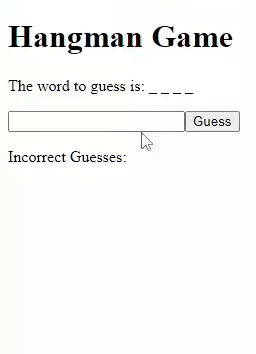

Alayna Myers
she/they
About Me
Hello! My name is Alayna Myers, and I'm a CS student up at Weber State University in my final year of undergrad. I've done two consecutive Summer Internships at HAFB as a part of their SMART Scholarship Program, and my work there mostly involved working within Blender and Unreal engine. This has really built a passion for learning more about rigging 3D models, photogrammetry, and procedural generation.
I am excited to share my work with you through my portfolio. Feel free to explore my projects below!
Node/Express Site with File Storage
Description: For this project the goal was to simply get practice working the basices of Node and Express. This involved creating a Node/Express website that has the following features:
- An HTML form to collect a user's first name, last name, and favorite food. This data is stored in a text file on the backend.
- A route that reads the stored data from the text file and dynamically generates an HTML page to display all information.
- A second HTML form that allows users to search for people by their favorite food and displays matching results.
- A clean layout with routes and pages organized into appropriate folders.
Technologies Used: Node.js, Express.js, HTML, CSS, Visual Studio Code
Technical Challenges: I struggled a bit at the beginning with getting all the npm packages to install correctly, and had to trouble shoot some issues caused by empty lines not being removed from the data file. Both were easy fixes, although the npm installation issues did require some googling to figure out.
My Contributions: This was a solo project, which included setting up the user.js route, creating a userinfo.txt file to store data, and making 2 basic frontend html forms for the user to interact with.


Four In a Row Game
Description: This project involved extending some given code for a simple tic-tac-toe game into a fully functioning connect four game, utilizing React. It needed to include the following features:
- A 6x7 grid board where players take turns to drop their tiles into a column.
- Clicking in a column "drops" a user's tile into that column if an open spot exists. If the column is full, the user's click does nothing.
- Game logic to detect 4 in a row situations horizontally, vertically, and diagonally. The game announces the winner and prevents further play once a winner is detected.
- Detection of a tie game when the board is full and no winner is declared.
- Automatic switching between players after each tile placement.
Technologies Used: React.js, HTML, CSS, JavaScript, Visual Studio Code
Technical Challenges: It took me a bit to fully wrap my head around the best way to implement the array storage for keeping track of where each player went, along with how specifically to traverse said away to check for diagnol wins. I did this by implementing a 2D array and utilizing for loops to check through different "directions" in the array (i.e. I had a sperate array containing x,y values that would specify how the loops should move through the game board array).
My Contributions: I did all the work for this project, albeit building off of the base tic-tac-toe code. This included editing css styling and creating all the logic for full gameplay.

Node, Express, Mongo, and RESTful API
Description: This project focused on creating a Node/Express/Mongo backend for a simple banking system. The backend includes the following features:
- A user account system that allows for creating new accounts with fields such as first name, last name, email address (used as the username), phone number, and password.
- Validation to ensure that email addresses are unique across accounts.
- APIs to check if a given email/password combination is valid, retrieve all user accounts, and retrieve details of a specific user account by email address.
- Functionality to update an account's role (customer, manager, or administrator) based on the associated email address.
- APIs for depositing money into either checking or savings accounts, with amounts managed as integers in total cents for precision.
- Withdrawal functionality that ensures no account goes into a negative balance, with appropriate success or failure responses.
- Money transfer functionality between checking and savings within the same account, with validation to prevent overdrafts.
Technologies Used: Node.js, Express.js, MongoDB, Mongoose, RESTful API, Visual Studio Code.
Technical Challenges: The main learning curve for this one was utilizing RESTful, as I had never used it before. I kept making simple mistakes while using it, like forgetting to change the method from GET to POST or including a typo in the body. This resolved on its own as I continued using it, however.
My Contributions: This was a solo project, where I did all the coding for the API routes, validating data, setting up MongoDB connections, and base logic for transactions.
Hangman
Description: This project involved creating a simple Hangman game that can keep track of high scores for each length of word. The project includes the following features:
- The game begins by asking the user for their name, which is stored for the session duration.
- A randomly chosen word is displayed as a series of blank slots representing each letter. The user attempts to guess the letters.
- If a guessed letter is correct, it is revealed in the correct position(s). If incorrect, the hangman progresses, and the incorrect letter is added to a visible list.
- If the user successfully guesses the word, their score (based on the number of guesses) is stored and displayed in a top 10 high scores table for words of similar length.
- If the user fails to guess the word, the correct word is revealed, and the user is shown the top 10 high scores table for similar words.
- The game then prompts the user to play again, maintaining their session and name for the next game.
- The word list contains over 1000 words, randomly selected for each game, ensuring a varied experience.
Technologies Used: React.js, Node.js, Express.js, MongoDB, Mongoose, Sessions, RESTful API, Visual Studio Code.
Technical Challenges: The biggest hurdle for this project was getting the 1000 word bank csv file to work properly, but one of my teammates was very proactive on tackling the issue and was able to sort it out quickly. We also debated about whether or not to add some simple animation of a hangman stick figure to go along with the player guesses, but ultimately decided to just keep track of how many incorrect guesses had been made and notify the player when the game ended.
My Contributions: This was a group project I worked on with two other partners. I kicked everything off by building up the base skeleton code and assigning routes, then tackled the logic for keeping track/checking guesses for each player session. I also revamped some of the base game logic my partners worked on to integrate it better with the updated tracking/guess code and polished up some of the frontend UI display to make it more readable. After that I handled the route and logic for routing the user to the highscore page after a Game Over event, making sure it pulls from the correct array according to word length.
Full-Stack Banking Application
Description: This project was based around the development of a full-stack banking application with a React frontend and a Node/Express/MongoDB backend. For simplification I've broken it into two components, the frontend and the backend. Their respective features include:
Frontend Features:
- A functioning login system that requests a username and password, verifying credentials through the backend.
- Support for three user roles: administrator, employee, and customer, each with specific permissions and capabilities.
- Administrators can access all screens, manage user roles, and have their own bank accounts.
- Customers can manage their own accounts, including savings, checking, and investment accounts, with options to deposit, withdraw, and transfer money.
- Employees can view and manage customer accounts, perform transfers between accounts, and assist with customer transactions.
- A clean, consistent UI designed using Bootstrap, ensuring that the application is polished, user-friendly, and professional.
- Responsive design elements that ensure the application functions well across different devices.
Backend Features:
- Implementation of a secure login system with hashed passwords using SHA-256 for credential verification.
- Integration with MongoDB to store user data, account information, and transaction histories.
- Role-based access control, allowing administrators, employees, and customers to have different levels of access and permissions within the application.
- Full account management features, including the ability to deposit, withdraw, and transfer funds between accounts.
- Detailed transaction history for both individual accounts and overall account activity, tracked with timestamps and amounts.
- APIs to handle all interactions between the frontend and backend, ensuring smooth and secure data exchanges.
Technologies Used: React.js, Node.js, Express.js, MongoDB, Mongoose, Tailwind CSS, RESTful API, SHA-256, Visual Studio Code.
Technical Challenges: The biggest challenge for this project was figuring out how to implement protected routes, as none of us on the team had any experience with it before. I initially tried using Rect Context for authentication but it was causing interference with Tailwind CSS so I ended up switching my approach to simply having it all handled by the backend via session middleware and CORS, with the React frontend simply checking with the backend for authentication status and role.
My Contributions: This was a group project and my main focus for it was sorting out protected routes and creating an employeeSummary route for viewing user account info and handling transactions/transfers. This included things like base UI, error handling, transaciton/transfer logic, checking balances validating information, updating history, etc. I also assisted with debugging the other routes during their completion.